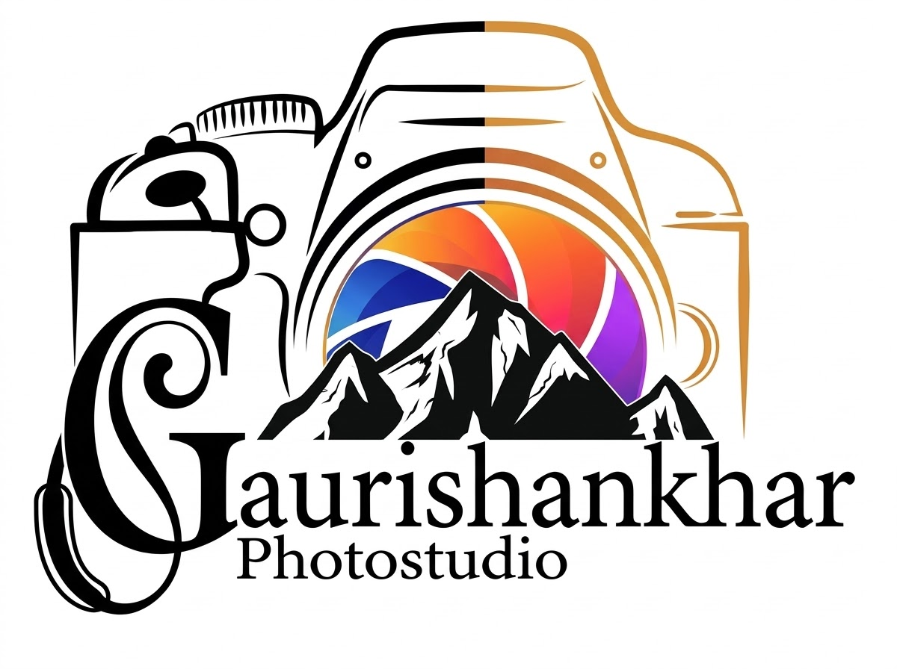

Welcome to my photo gallerya collection of moments, light, and stories captured through my lens. Whether exploring dramatic outdoor landscapes, focusing on the refined textures of product details, or fine-tuning color and contrast in post-production, I aim to transform fleeting everyday scenes into vivid, lasting visuals. Every photograph here reflects a commitment to craft, mood, and visual storytelling. Explore the portfolio to view recent work, see my digital editing style in action, or get in touch to collaborate on your next visual project.